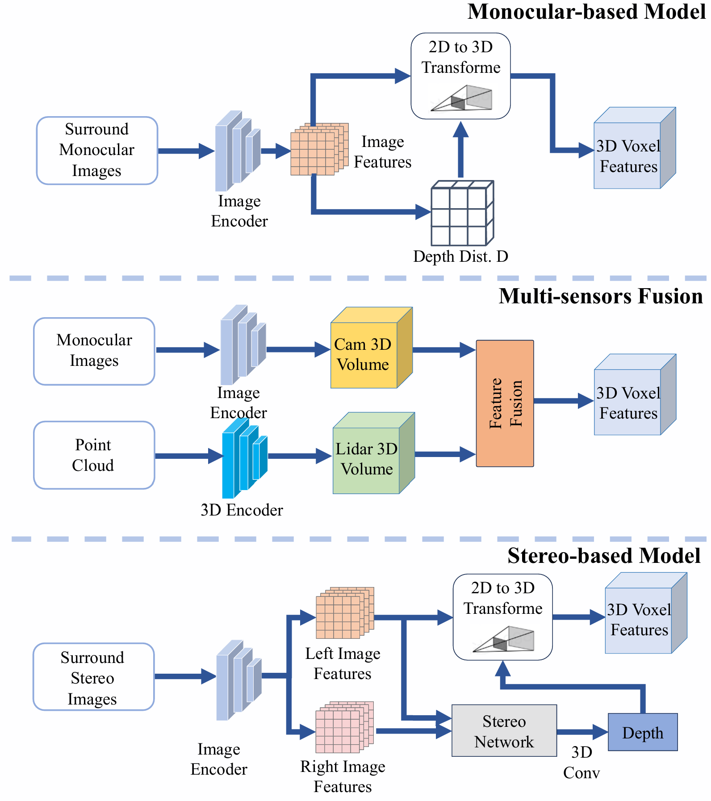
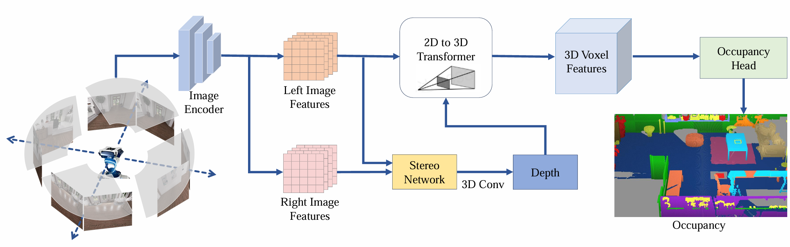
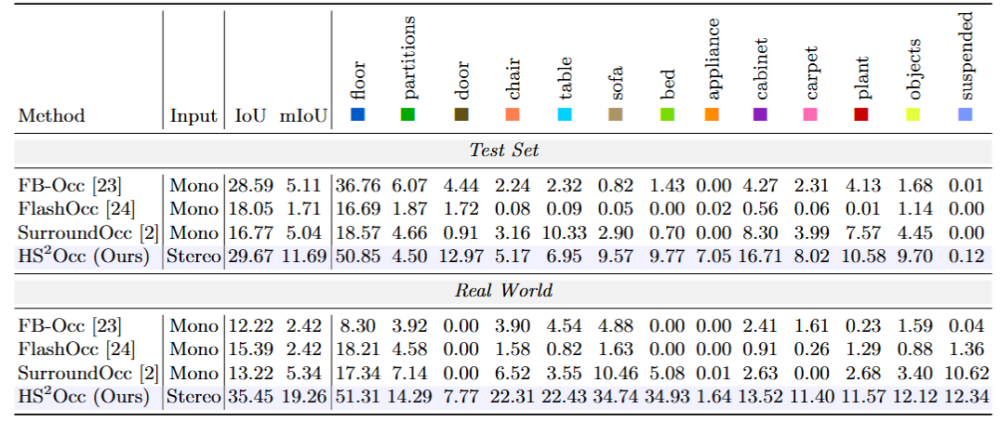
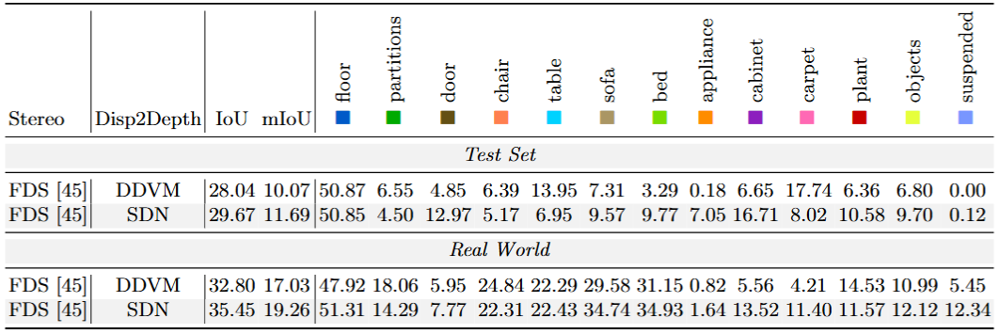
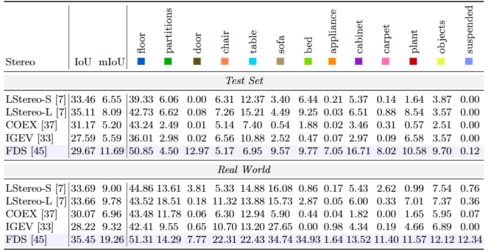
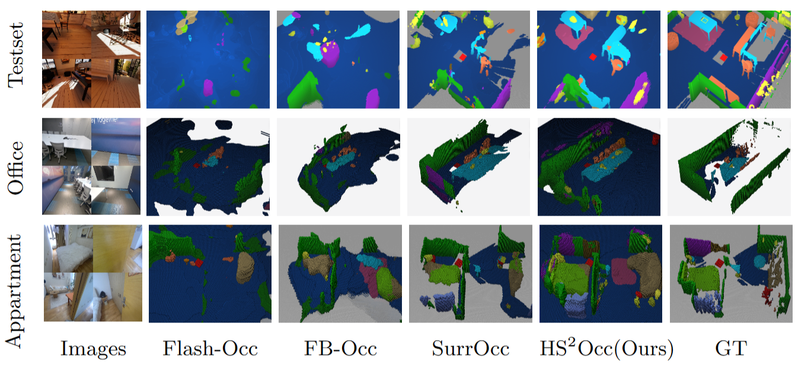

Occupancy prediction at voxel-level granularity is essential for safe robotic navigation and interaction in complex environments. Existing occupancy datasets, however, are predominantly designed for autonomous driving with vehicle-centric biases---forward-facing cameras, far-field geometry, and static road priors---limiting their applicability to embodied humanoid perception.
We present Humanoid-OmniOcc, a large-scale panoramic stereo-based occupancy dataset tailored for humanoid robots. Built on NVIDIA Isaac Sim, the dataset captures full-surround RGB via four synchronized stereo pairs mounted on a head-like rig, and provides high-fidelity voxel ground truth with fine-grained semantic annotations across 15 indoor categories through physically-based rendering and multi-view geometric verification. Humanoid-OmniOcc encompasses 15 diverse simulated indoor scenes and 5 real-world environments, yielding over 155K samples with broad scene and style diversity.
Importantly, the dataset is designed around a Real2Sim2Real closed-loop paradigm: real sensor specifications drive physically accurate simulation, simulation produces large-scale annotated training data, and models trained in simulation are directly evaluated on real-world captures---enabling iterative refinement of the sim-to-real pipeline.
We further propose OmniStereo, a surround stereo-guided occupancy network that exploits robust depth priors for accurate 2D-to-3D lifting. Extensive experiments show that OmniStereo consistently outperforms monocular baselines and generalizes well to both unseen simulated test scenes and real-world environments, validating the effectiveness of the Real2Sim2Real design.

Comparison of different 3D perception paradigms. Top: Monocular-based model. Middle: Multi-sensor fusion model. Bottom: Our proposed stereo-based model.

The pipeline of our proposed OmniStereo framework. An image encoder first extracts features from surround-view stereo images. These features are then processed along two decoupled pathways: the upper pathway lifts 2D features to 3D camera voxel features via a 2D-to-3D transformer for occupancy prediction, while the lower pathway estimates depth. Importantly, the estimated depth serves as an auxiliary input to the 2D-to-3D transformer, enhancing the accuracy of the view transformation. Finally, an occupancy head predicts the 3D occupancy grid from the camera voxel features.

Semantic occupancy prediction results on the test sets and in the real world. We report per-class IoU and mIoU (%).

Ablation Study on Disparity-to-Depth: DDVM vs. SDN.

Ablation Study on Stereo module.

Qualitative comparisons on the test set (first row) and real-world scenes (rows 2–3). The first column shows the left images from the four stereo pairs (front, back, left, and right).
@article{humannoid-omniocc,
author = {Xianda Guo, Bohao Zhang, Chenwei Huang, Shiyuan Chen, Ruilin Wang, Yiqun Duan, Cong Yang, Qin Zou, Wei Sui},
title = {Humanoid-OmniOcc: Stereo-Based Full-View Occupancy Dataset for Embodied AI},
journal = {XXX},
year = {2026},
}